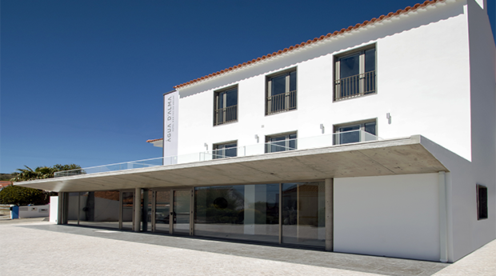

Na Foz do Arelho, o que não faltam são ótimos sítios para se alojar e aproveitar as suas férias com conforto e sem preocupações.
Aqui são mencionadas algumas sugestões.
Aqui são mencionadas algumas sugestões.
Água d'Alma Hotel
Situado entre a Lagoa de Óbidos e o Oceano Atlântico, este hotel de estilo contemporâneo ocupa uma posição previlegiada na Foz do Arelho.
Os quartos incluem TV por cabo, uma secretária, e casa de banho privada com banheira e chuveiro.
Os hóspedes podem relaxar com uma bebida no bar, que tem um grande aquário com peixes tropicais.
Há também um lounge moderno com uma televisão para ver as notícias ou eventos desportivos.
Os quartos incluem TV por cabo, uma secretária, e casa de banho privada com banheira e chuveiro.
Os hóspedes podem relaxar com uma bebida no bar, que tem um grande aquário com peixes tropicais.
Há também um lounge moderno com uma televisão para ver as notícias ou eventos desportivos.

Hillside House - Suites & Spa

Hillside House Suites & Spa é caracterizado pela sua atmosfera descontraída, design sofisticado e a Lagoa de Óbidos como cenário.
Parque de Campismo Orbitur Foz do Arelho

O Parque de Campismo Orbitur Foz do Arelho conta com restaurante e acesso WiFi grátis.
O parque de campismo tem uma piscina exterior sazonal.
É recomendado para umas férias económicas, em plena comunhão com a natureza, descontraídas, e cheias de aventura.
O parque de campismo tem uma piscina exterior sazonal.
É recomendado para umas férias económicas, em plena comunhão com a natureza, descontraídas, e cheias de aventura.